The maximum principle that we are about to state provides necessary conditions for a trajectory
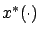
of the hybrid control system corresponding to a control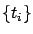
, and a switching sequence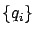
to be locally optimal over trajectories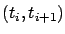
. Most of the statements of this hybrid maximum principle are more or less familiar to us from Chapter 4. We proceed with the understanding that suitable technical assumptions are in place so that all derivatives, tangent spaces, and other objects appearing below are well defined.Define the family of Hamiltonians
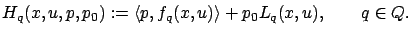
The abnormal multiplier must satisfy
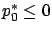
as usual. The costate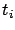
of
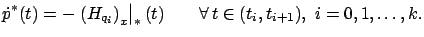
The transversality condition says that the vector
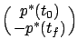
must be orthogonal to the tangent space to the endpoint constraint set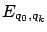
at , which we write as
, which we write as
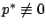
. The Hamiltonian maximization condition must hold in the usual sense for each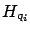
on the corresponding interval . Moreover, the Hamiltonian remains constant along the optimal trajectory (in particular, its value is not affected by the switching events). Finally, for free-time problems the Hamiltonian is 0.
The transversality condition (7.36) is completely analogous to the transversality condition (4.46) for the case of initial sets discussed at the end of Section 4.3.1. As for the switching conditions (7.37), the intuition behind them is similar and can be understood as follows. Consider the continuous portions of  which correspond to the subintervals
,
which correspond to the subintervals
,
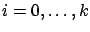
. Reparameterize the time individually for each of them so that their domains are all mapped onto the same interval, say,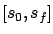
. This allows us to ``stack" them all together, i.e., treat them as if they evolve simultaneously. Then, the transversality condition (7.36) and the switching conditions (7.37) become one aggregate transversality condition induced by the endpoint constraint and the switching surfaces. The appearance of the gradient of the switching cost in this transversality condition is also not surprising because the switching cost becomes a combination of terminal and initial cost (see Section 4.3.1 for a discussion of transversality conditions for problems with terminal cost).